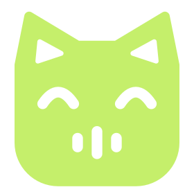

Grafismos do TekaFlow: o que você escolheu, aplicado
Três caminhos ficaram: a fala escrita, o som em círculos que perdem cor e a letra como grafismo. Os dois pontos que viram rosto saíram. Abaixo, cada conceito aplicado ao TekaFlow, e depois as 41 referências reais de onde eles vêm. Clique em qualquer imagem para ampliar.
01 A fala escrita02 O som em ondinhas que perdem cor03 A letra como grafismoDois pontos viram um rosto
Aplicado ao TekaFlow
Primeira leitura dos três conceitos com as cores e a fonte da marca. O desenho é rascunho: serve para você dizer o que mantém.
Fala em pílulasReferência: Wordibly, Human
EConta um pouco da sua trajetória.
VPassei cinco anos em design de produto, numa fintech.
ETeve algum desafio técnico no checkout?

Na migração, defendi manter a fila até medir a latência.
A fala escrita: cada fala é uma pílula. As antigas vão perdendo cor, a sugestão do gato acende em limão.
Letra em bolinhaReferência: Wordibly
TekaFlow
A letra dentro da bolinha: o nome vira confete, e o gato entra como mais uma bolinha.
Ondinhas que perdem corReferência: Hearing Australia, sem o relevo
As ondinhas saem no formato do ícone, de trás de um quadradinho escuro que protege o gato, e perdem a cor, do limão ao azul céu até sumir.
A letra como cartazReferência: Pentagram, Wonda
TekaFlow
ouvindo…
A letra como cartaz: o nome em Chillax gigante, cortado pela borda, com uma pílula do gato por cima.
Adesivos de estadoReferência: Wordibly
ouvindopensando···escrevendopronto✓diga isso
Adesivos de estado: o app fala com o usuário em pílulas, no mesmo jeito da fala escrita.
Os três juntosComposição
EComo você lidaria com um prazo que não fecha?
Fale do risco primeiro, depois do plano.
Os três juntos: ondinhas que perdem cor, a fala escrita em pílulas e a palavra TekaFlow.
Referências dos caminhos escolhidos
Estudos de caso reais, feitos por gente.
01
A fala escrita
Pílulas, marca-texto, adesivos de palavras e uma letra dentro de uma bolinha. A conversa vira texto na tela, e o texto vira o grafismo.
Adesivos de palavras em pílulasWordibly, Big HumanLetras em bolinhas sobre a fotoWordibly, Big HumanMarca-texto dentro da interfaceWordibly, Big HumanFoto, pílula e legenda no mesmo planoWordibly, Big HumanSímbolos de transcrição viram a identidadeHumanA palavra falada na tela, como campanhaHumanUma letra feita de linhas de textoDescript, RamotionO mesmo ícone em quatro fundosDescript, Ramotion
02
O som em círculos, em ondinhas que perdem cor
Anéis que se abrem a partir de um ponto. Para o TekaFlow, sem relevo: ondinhas que vão perdendo a cor conforme se afastam.
Três quadros: ondas, pontos e anéisHearing Australia, LandorAnéis concêntricos saindo de um pontoHearing Australia, LandorAnéis, pontos e linhas em quadrosHearing Australia, LandorO mesmo anel na telaHearing Australia, LandorCírculos de tamanhos diferentesRev
03
A letra como grafismo
Tipografia grande, em curva ou carimbo, fazendo o trabalho de uma ilustração.
O nome em círculo, cortado por uma retaNew York Philharmonic, PentagramA mesma ideia em cartazNew York Philharmonic, PentagramLetras de impressão em tipo móvelGimlet, GrandArmyRecortes e colagem como texturaGimlet, GrandArmyFrase em fonte grossa como imagemWonda, Good HabitTexto com um desenho no meioWonda, Good HabitAviso de porta com a mesma vozWonda, Good HabitNome e símbolo sobre malha de construçãoRev
Guardados
Os outros caminhos continuam aqui, caso voltem.
Descartado: dois pontos viram um rosto
Dois pontos viram a marca inteiraPictoplasma, andstudioMesma regra em dezenas de peçasPictoplasma, andstudioUm círculo vazado atravessa o rostoUnderstudy, RévoltéCinco pontos, mais nadaMicrodot, Standard Projects
Guardado: pontos que se dissolvem
Uma flor de pontos, do cheio ao vazioPhlox, RévoltéA mesma forma em adesivosPhlox, RévoltéFita adesiva com pontos grandesMicrodot, Standard ProjectsFaixas com textura de linhaRev
Guardado: peças que se encaixam
Peças de quebra-cabeça com encaixesCluesoCavidades, saliências e lados retosCluesoFormas simétricas, quase rostosBEYA, KR8Cinco cartazes da mesma gramáticaBEYA, KR8
Guardado: o gato sem o clichê
Rosto de gato só em linhas, e patasSalty Cat, Darya BatyrSilhueta preta, recorte forteSalty Cat, Darya BatyrO gato escondido dentro de uma letraMivov, Serkan HürsgünelO mesmo traço em fotoMivov, Serkan Hürsgünel
Guardado: ouvir, por desenho
Gravura de uma orelha com uma espiralRevA espiral construída em proporção áureaRevUm contorno vermelho corta a fotografiaIQONIC, Lorenzo RoccoO mesmo contorno em papelariaIQONIC, Lorenzo Rocco